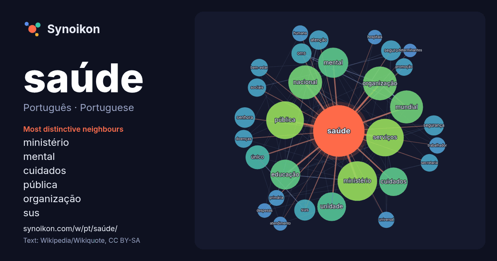

Português · Portuguese · popular word
saúde
“health” · The words found around it in 1726 instances from Portuguese Wikipedia, Wikiquote.

Most distinctive neighbours
- ministério 62×
- mental 56×
- cuidados 46×
- pública 43×
- organização 35×
- sus 32×
- oms 29×
- serviços 29×
- educação 28×
- seguro 24×
- unidade 24×
- bem-estar 21×
- mundial 20×
- único 18×
- atenção 18×
- secretaria 18×
- senhora 18×
- promoção 17×
- primária 16×
- nacional 16×
× = how many times more often than in general Portuguese Wikipedia text.
Most frequent neighbours
- ministério 112
- pública 102
- serviços 101
- nacional 82
- organização 82
- mundial 78
- mental 65
- educação 64
- unidade 59
- cuidados 58
- brasil 44
- único 41
- família 33
- sus 32
- público 30
- senhora 30
- oms 29
- política 29
- segurança 29
- seguro 29
In context
- significados, veja Saúde (desambiguação). Nota: "Sanidade" redireciona para este artigo. Para sanidade mental, veja saúde mental. A definição de saúde possui implicações Wikipedia snippets · Saúde
- veja Who. Organização Mundial da Saúde (em inglês: World Health Organization - WHO) é uma agência especializada em saúde, fundada em 7 de abril de 1948 Wikipedia snippets · Organização Mundial da Saúde
- usos, veja SUS (desambiguação). Sistema Único de Saúde (SUS) é a denominação do sistema público de saúde brasileiro criado pela Constituição Federal de Wikipedia snippets · Sistema Único de Saúde
- A saúde mental abrange o bem-estar emocional, psicológico e social, influenciando a cognição, a percepção e o comportamento. A saúde mental desempenha Wikipedia snippets · Saúde mental
- objetivo de organizar sistemas e serviços de saúde, atuar em fatores condicionantes e determinantes do processo saúde-doença controlando a incidência de doenças Wikipedia snippets · Saúde pública
- A saúde das mulheres difere da do homem em muitas maneiras. Ela constitui-se como um exemplo de saúde da população, onde a saúde é definida pela Organização Wikipedia snippets · Saúde das mulheres
- territoriais de saúde financiada publicamente, popularmente chamados de Medicare. O sistema é regido pelas disposições da Lei de Saúde do Canadá, de 1984 Wikipedia snippets · Assistência médica no Canadá
- A saúde preventiva ou cuidados de saúde preventivos, ou profilaxia, consistem em medidas tomadas para a prevenção de doenças. A doença e a incapacidade Wikipedia snippets · Saúde preventiva
More Portuguese words
- arte
- ciência
- clima
- comida
- coração
- cão
- deus
- dinheiro
- família
- força
- gato
- história
- língua
- morte
- natureza
- ouro
- ponte
- trabalho
- trem
- verdade
- vida
- água
Precomputed on 2026-10-09 with default settings (±5 words, medium corpus). The interactive map can refresh it with live data.